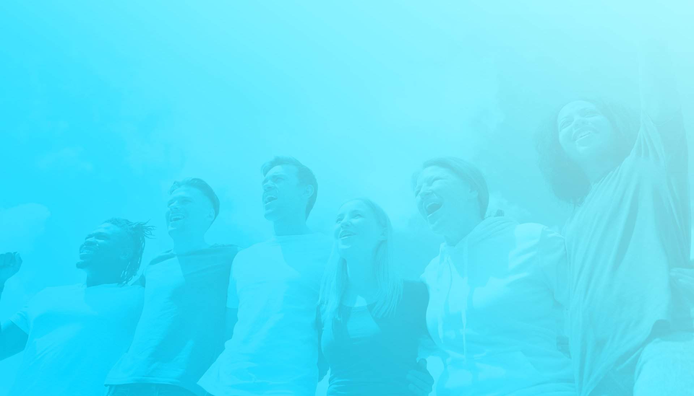
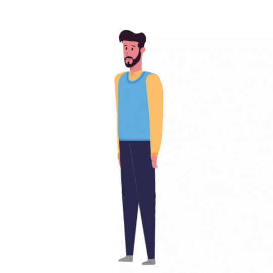
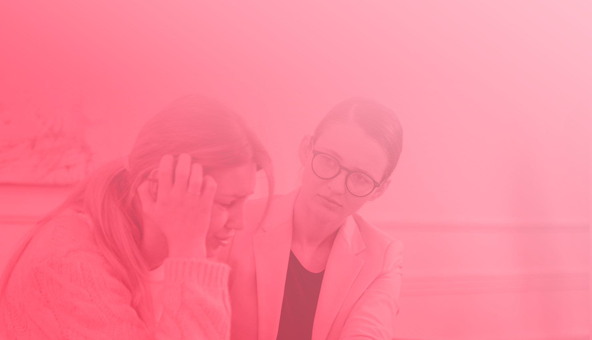

Your Rights
Let’s start with your rights. Every child in the world has special rights, and they are set out in the United Nations Convention on the Rights of the Child.
Read moreSOS StaySafe
How to stay safe, how SOS Children’s Villages works to protect children and young people, and what children’s rights mean when it comes to staying safe.
We believe it is important for children and young people to know how to stay safe, and to have a say in making things safer for themselves and their friends.
We hope you enjoy exploring and learning with us.

We truly value the ideas and input of children and young people like you. They help SOS Children’s Villages become even better at keeping everyone safe. Here, you can find out how to get involved and help us make our safety information clearer and more useful for children and young people.
By involving more children and young people like you, we can make our programmes even stronger and better at meeting your needs. Your voice matters!


Let’s start with your rights. Every child in the world has special rights, and they are set out in the United Nations Convention on the Rights of the Child.
Read more
At SOS Children’s Villages, it is our duty to make sure that every child and young person in our programmes is protected and feels safe.
Read more
Unfortunately, even with all prevention efforts, abuse can still happen.
It is the duty of SOS Children’s Villages to provide you with different reporting channels so that you can tell someone if you have experienced or witnessed abuse, or if you suspect it. Even if you are not sure or don’t have evidence, it is important that you report it.
Read moreThe internet is a great place to find information, learn new things, talk to friends and share your talents – but it is important to be careful. Cyber safeguarding means taking steps to keep yourself and your personal information safe and to avoid online scams.
Read moreFind out what unfairness and corruption can look like in everyday life and what you can do when something does not feel right. Explore real-life scenarios in an interactive challenge and see how Courage, Commitment, Trust and Accountability help you make fair and safe choices.
Read moreIf you have experienced or witnessed abuse, neglect or another safeguarding concern, you have the right to seek help and report what happened.
REPORT A SAFETY CONCERNSOS SpeakUp · soscvi.speakup.report